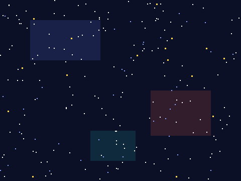

太空射击
五次课做出一个完整的街机游戏——先玩成品 → 拆解 → 自己试 → 卡住才看参考做法。上课请用 放映版；本页是全文与进度。
一、开课之前
先玩 1 分钟
👨👩👦 一起 · 先玩 1 分钟
先把成品玩一遍——你接下来五次课，就是要亲手做出它。
游戏解剖图
👨👩👦 一起 · 游戏解剖图（自上而下）
整个游戏 = 五大模块，五次课各做一块：
第 1 课
第 2 课
第 3 课
第 4 课
第 5 课
素材清单
👨👩👦 一起 · 素材
三个角色：飞船、子弹、陨石——素材包全有。
 子弹素材包导入
子弹素材包导入
背景素材包自带课程进度表
👨👩👦 一起 · 课程进度表
二、五次课
第 1 课 · 飞船驾驶
👨👩👦 一起 · 本章目标
👨👩👦 一起 · 效果与拆解
- 已有按键事件— 打砖块加料站做过
- 新学持续按住检测— 「按下 … 键?」放进循环
- 已有边界限制— 左右墙 ±210
- 已有绿旗初始化— 出生点固定
👦 孩子自己 · 自己试试（先别翻答案）
先自己试 10 分钟：素材包里全有，先导入摆好；想怎么做就怎么做，改坏了绿旗能复原；卡住超过 5 分钟，再看下面的参考做法。
👨👩👦 一起 · 概念 · 按住 vs 按下
按住 = 每帧都在问
- 体重秤放进重复执行，每帧读一次
- 读到就移动 6 步，读不到就不动
- 按住不放 = 连续驾驶，松手急停
👨👩👦 一起 · 参考做法（卡住才看）
- 飞船就位，两种移动
当绿旗被点击 移到 x: (0) y: (-130) 重复执行 如果 <按下 [右箭头] 键?> 那么 将x坐标增加 (6) 如果 <按下 [左箭头] 键?> 那么 将x坐标增加 (-6)🧰 积木在：事件侦测运动✅ 按住方向键，飞船平滑驾驶 - 左右墙
如果 <(x 坐标) > (210)> 那么 将x坐标设为 (210) 如果 <(x 坐标) < (-210)> 那么 将x坐标设为 (-210)✅ 贴边停住，不飞出战场 - 报位置的无线电
将 [飞船x] 设为 (x 坐标)
加在主循环末尾——子弹下一课要从这里读出发位置（全局变量 飞船x）✅ 监视窗里飞船x实时跳动
👨👩👦 一起 · 验收
- 🚀 按住连续驾驶、松手急停
- 🧱 左右不出界
- 📡 飞船x 实时更新
会躲了——下一课开火。
👨👩👦 一起 · 试一试
驾驶手感
🧑 家长先看 · 常见错误
驾驶两病
👦 孩子自己 · 进阶挑战 · 三选一
外观
变量
侦测
👦 孩子自己 · 课后回顾
第 2 课 · 弹幕初成
👨👩👦 一起 · 本章目标
👨👩👦 一起 · 效果与拆解
- 已有克隆— 第 1 关学的克隆
- 新学从机头发射— 读飞船x 定出生点
- 新学直线上膛— 每帧 y +10
- 新学出界自删— 到顶回收
👦 孩子自己 · 自己试试（先别翻答案）
先自己试 10 分钟：素材包里全有，先导入摆好；想怎么做就怎么做，改坏了绿旗能复原；卡住超过 5 分钟，再看下面的参考做法。
👨👩👦 一起 · 参考做法（卡住才看）
- 子弹本体隐身候命
当绿旗被点击 隐藏
✅ 舞台上只有飞船，子弹本体不上场 - 空格 = 发射
当按下 [空格] 键 克隆 [自己]
🧰 积木在：子弹角色上，独立事件帽✅ 按一下空格，生成一颗子弹 - 分身：从机头冲向天顶
当作为克隆体启动时 移到 x: (飞船x) y: (-120) 重复执行直到 <(y 坐标) > (175)> 将y坐标增加 (10) 删除此克隆体发射音效：循环前加「播放声音 [laser]」✅ 子弹从机头喷出，直冲天顶后消失
👨👩👦 一起 · 验收
- 🔫 每按一次出一发
- 🎯 总从机头正中射出
- ♻️ 到顶自动回收不卡机
有炮没敌人——下一课下陨石雨。
👨👩👦 一起 · 试一试
火力调校
🧑 家长先看 · 常见错误
子弹两病
👦 孩子自己 · 进阶挑战 · 三选一
控制
控制
外观
👦 孩子自己 · 课后回顾
第 3 课 · 陨石雨
👨👩👦 一起 · 本章目标
👨👩👦 一起 · 效果与拆解
- 已有克隆+删除— 子弹同款流程
- 新学随机间隔— 等待 0.5~1.5 秒
- 新学随机落点— x 在 −220~220 取随机
- 已有变量— 陨石速度先写死 4
👦 孩子自己 · 自己试试（先别翻答案）
先自己试 10 分钟：素材包里全有，先导入摆好；想怎么做就怎么做，改坏了绿旗能复原；卡住超过 5 分钟，再看下面的参考做法。
👨👩👦 一起 · 参考做法（卡住才看）
- 陨石本体：随机发车
当绿旗被点击 隐藏 重复执行 等待 (在 (0.5) 和 (1.5) 之间取随机数) 秒 移到 x: (在 (-220) 和 (220) 之间取随机数) y: (180) 克隆 [自己]🧰 积木在：控制运算运动✅ 陨石忽密忽疏地砸下来——每次都不一样 - 分身：下落 + 回收
当作为克隆体启动时 显示 重复执行直到 <(y 坐标) < (-185)> 将y坐标增加 (-4) 删除此克隆体✅ 陨石砸出屏幕底就消失
👨👩👦 一起 · 验收
- ☄️ 陨石永动、间隔不均
- 🎲 落点铺满全宽
- ♻️ 出底即删
敌人会下饺子了——下一课把它们打爆。
👨👩👦 一起 · 试一试
弹幕密度
🧑 家长先看 · 常见错误
陨石两病
👦 孩子自己 · 进阶挑战 · 三选一
控制
运动
外观
👦 孩子自己 · 课后回顾
第 4 课 · 撞个正着
👨👩👦 一起 · 本章目标
👨👩👦 一起 · 效果与拆解
- 新学克隆体互撞— 分身也能"碰到"分身
- 新学各删各的— 子弹删子弹、陨石删陨石
- 新学计分— 陨石侧加分
- 新学掉落与拾取— 击杀 22% 掉宝（雷电式）
- 已有删除此克隆体— 第 2 课
👦 孩子自己 · 自己试试（先别翻答案）
先自己试 10 分钟：素材包里全有，先导入摆好；想怎么做就怎么做，改坏了绿旗能复原；卡住超过 5 分钟，再看下面的参考做法。
👨👩👦 一起 · 参考做法（卡住才看）
- 分数归零（舞台）
当绿旗被点击 将 [分数] 设为 (0)
✅ 开局 0 分 - 陨石侧：命中就爆
如果 <碰到 [子弹]?> 那么 将 [分数] 增加 (1) 播放声音 [pop] 删除此克隆体加在陨石克隆体"下落循环"的肚子里，每帧都查一次✅ 陨石被打爆，分数 +1、响一声 - 子弹侧：命中自毁
如果 <碰到 [陨石]?> 那么 删除此克隆体同样塞进子弹的上升循环里——两边各自负责自己的消失，谁也不指挥谁✅ 子弹穿爆即逝，不留残影 - 雷电式宝物：击杀掉宝
当接收到 [击落] 将 [掉什么] 设为 (在 (1) 和 (5) 之间取随机数) 如果 <(掉什么) = (1)> 那么 将 [宝物类型] 设为 (在 (1) 和 (3) 之间取随机数) 移到 x: (击落x) y: (击落y) 克隆 [宝物]🧰 积木在：写在宝物角色（本体隐藏，三造型：W 火力 / S 护盾 / $ 赏金）；击落时先记全局变量 击落x / 击落y22% 概率掉宝——雷电的爽感来源✅ 陨石爆了可能弹出一个彩色宝箱，缓缓下落 - 宝物分身：下落 + 拾取
当作为克隆体启动时 如果 <(宝物类型) = (1)> 那么 换成 [火力宝物] 造型 显示 重复执行直到 <<碰到 [飞船]?> 或 <(y 坐标) < (-175)>> 将y坐标增加 (-2) 如果 <碰到 [飞船]?> 那么 广播 [拾取] 并等待 删除此克隆体飞船那头「当接收到 [拾取]」：类型 1→火力全开 10 秒（三连发+射速快）；类型 2→护盾+1（上限 5）；类型 3→分数+50✅ 碰到宝物：火力变三连发！或护盾回满、赏金到账
👨👩👦 一起 · 验收
- 💥 一颗子弹爆一颗陨石
- 🎒 分数稳定上涨
- ♻️ 不残留幽灵克隆体
核心循环打通：躲 → 打 → 分。
👨👩👦 一起 · 试一试
命中手感
🧑 家长先看 · 常见错误
打不爆两种
👦 孩子自己 · 进阶挑战 · 三选一
变量
事件
声音
👦 孩子自己 · 课后回顾
第 5 课 · 最后的护盾
👨👩👦 一起 · 本章目标
👨👩👦 一起 · 效果与拆解
- 新学生命变量— 护盾 3 格
- 新学无敌帧— 挨打后闪烁一秒
- 已有胜负广播— 打砖块第 5 课同款
- 已有发布会— 三句话
👦 孩子自己 · 自己试试（先别翻答案）
先自己试 10 分钟：素材包里全有，先导入摆好；想怎么做就怎么做，改坏了绿旗能复原；卡住超过 5 分钟，再看下面的参考做法。
👨👩👦 一起 · 参考做法（卡住才看）
- 护盾三格
当绿旗被点击 将 [护盾] 设为 (3) 将 [分数] 设为 (0)
✅ 开局 ❤❤❤ - 被砸：掉一格 + 无敌一秒
如果 <碰到 [陨石]?> 那么 将 [护盾] 增加 (-1) 重复执行 (10) 次 隐藏 等待 (0.05) 秒 显示 等待 (0.05) 秒塞进飞船主循环——闪烁期间碰不到？把碰撞判断包进「如果 <<<碰到陨石?> 与 <(无敌) = (0)>>」再加个无敌变量更稳（进阶）✅ 被砸闪白，一秒内不再连扣 - 到线就结束
如果 <(护盾) < (1)> 那么 广播 [游戏结束] 停止 [全部脚本] 如果 <(分数) > (299)> 那么 广播 [游戏结束] 停止 [全部脚本]✅ 护盾空或 300 分，全场停 - 结局 + 发布会
当接收到 [游戏结束] 如果 <(护盾) < (1)> 那么 说 [护盾耗尽 · 按绿旗再来] (3) 秒 否则 说 [300 分达成！] (3) 秒1️⃣ 我做了什么2️⃣ 最难在哪3️⃣ 想怎么改✅ 结局一句话 + 三句话发布会
👨👩👦 一起 · 验收
- ❤ 被砸掉格、无敌一秒
- 🏁 护盾空判负 / 300 分判胜
- ↩️ 绿旗全复原
- 🎤 发布会讲满三句
太空射击完成——三关连闯，下一关去玩一条会长的蛇。
👨👩👦 一起 · 试一试
生存平衡
🧑 家长先看 · 常见错误
护盾两坑
👦 孩子自己 · 进阶挑战 · 三选一
控制
事件
变量
👦 孩子自己 · 课后回顾
三、本作总结
- 第 2 课👥 克隆
- 第 3 课🎲 随机数
- 第 4 课🎯 侦测·碰到
- 第 5 课🎒 变量
- 体重秤式按键：「按下…键?」放进循环 = 按住持续动
- 克隆当火力与敌雨：生成 → 移动 → 回收，三步一套
- 克隆体互撞各删各的：互不指挥，各自循环